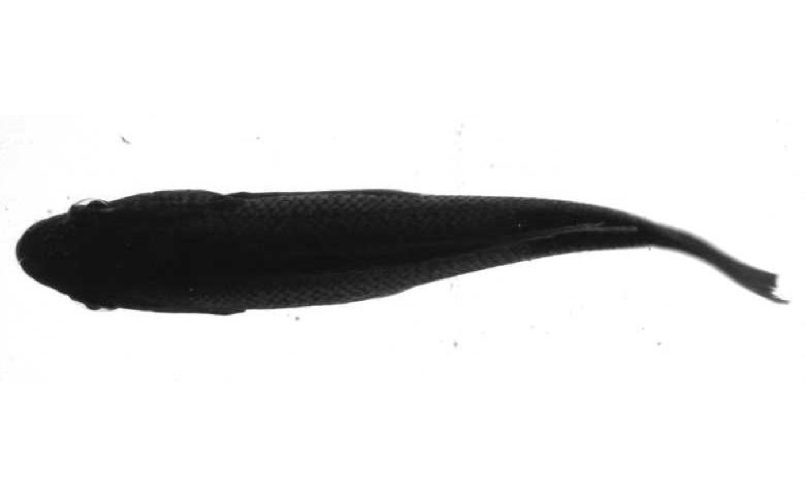
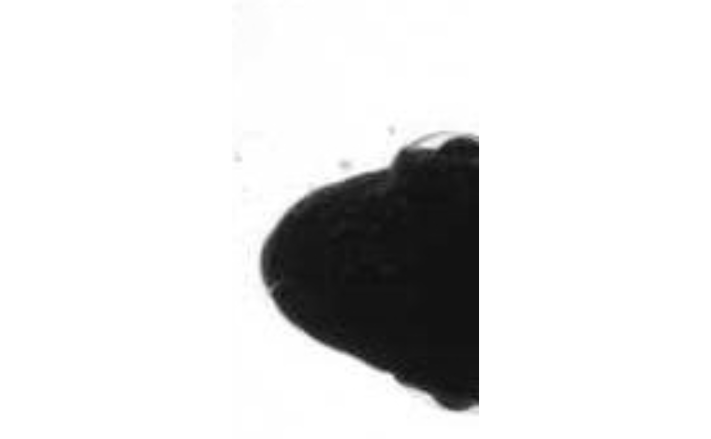
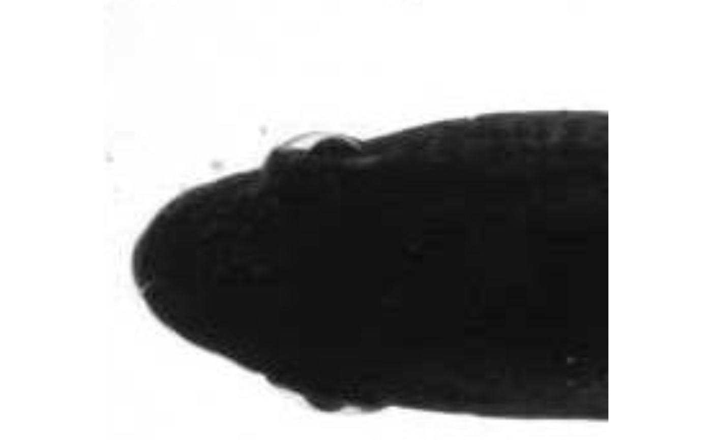

crop.img.RdCrops an image or images with a rectangle
crop.img(
img = NULL,
ul = NULL,
br = NULL,
out.dir = NULL,
type = NULL,
locate = FALSE
)character, a path to an image file or directory containing images.
numeric, the upper-left xy position of the rectangle in pixels.
numeric, the bottom-right xy position in pixel.
character, the directory to which the image will be saved.
character, image type (optional). Must be: "jpeg", "png", or "tiff (case ignored)." If missing, file format is automatically determined by file name extension(s).
logical, if TRUE and the 'img' is a single file path, the original image is printed to the graphics device and the user picks ul and br (in that order) with the cursor and two clicks of the mouse. If TRUE, the coordinates of the points picked by the user are returned. Ignored is 'img' is a directory containing images.
#retrieve image in system
y <-system.file("extdata/img", "sunfish_BCF.jpg", package = "trackter")
od <- paste0(tempdir(),"/cropimg")
dir.create(od)
#display original
EBImage::display(EBImage::readImage(y),method="raster")

# crop and save as orignal format
crop.img(img=y,ul=c(5,30),br=c(100,200),out.dir=od)
# crop and save as png
crop.img(img=y,ul=c(5,30),br=c(200,200),out.dir=od,type="png")
#display cropped images
EBImage::display(EBImage::readImage(paste0(od,"/sunfish_BCF.jpg")),method="raster")

EBImage::display(EBImage::readImage(paste0(od,"/sunfish_BCF.png")),method="raster")

#clean up
unlink(od,recursive=TRUE)
# use graphics device to choose crop margins
if (FALSE) {
crop.img(img=y,out.dir=od,locate=TRUE)
}